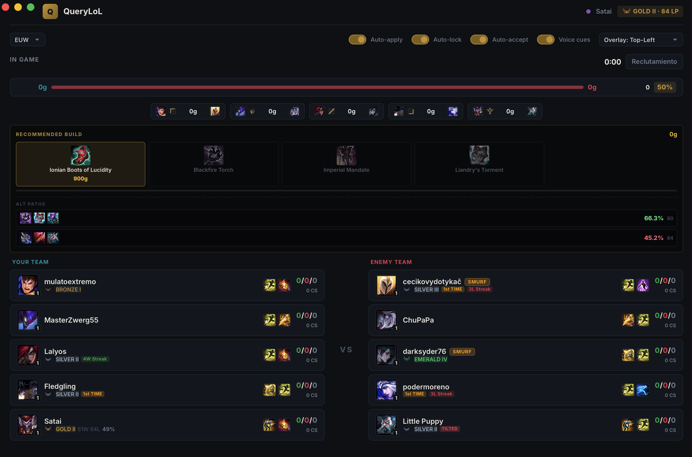
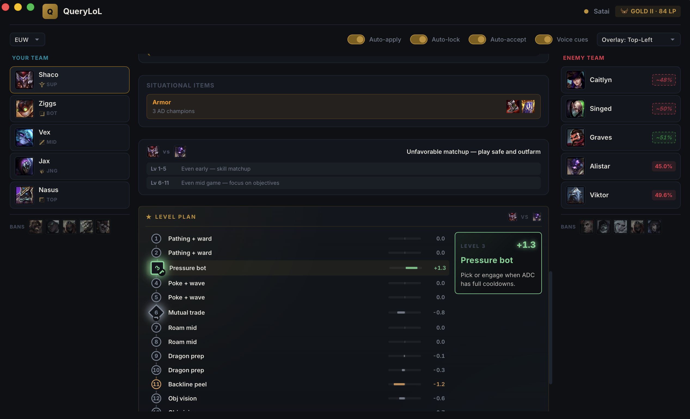
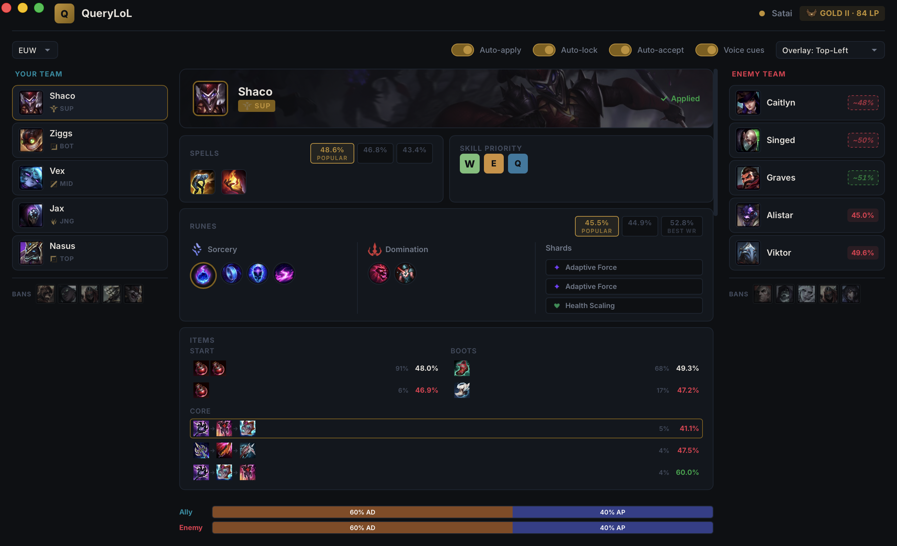
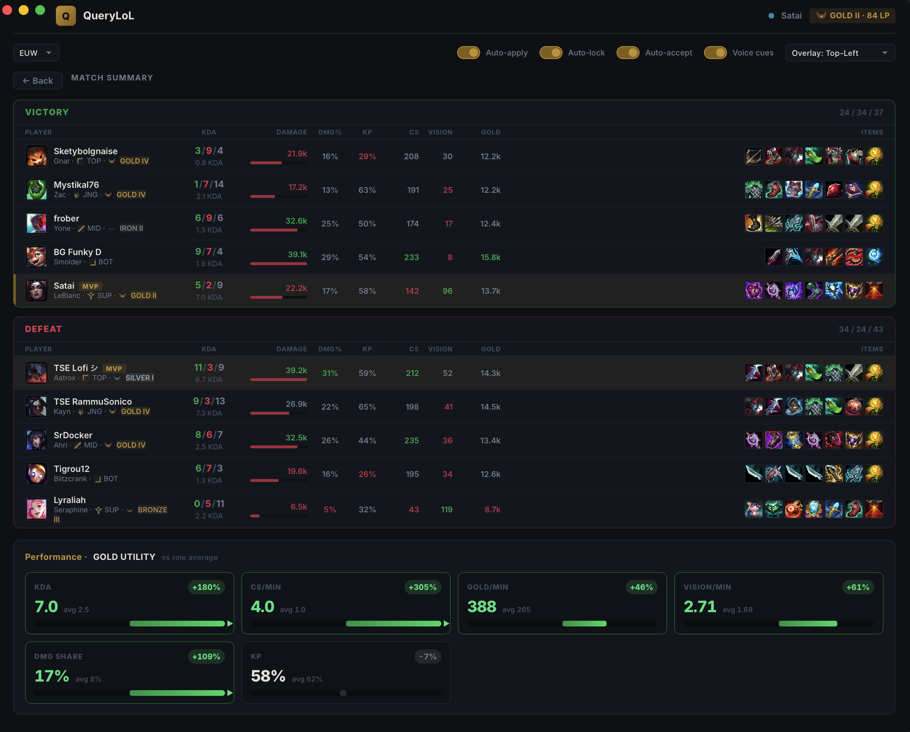
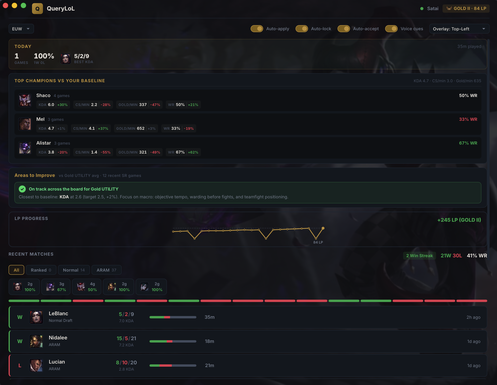

Plans every level
A coach-style 18-level route vs your lane opponent, with the right action on each level — for all 172 champions.
Not another scoreboard. QueryLoL maps a per-level game plan for all 172 champions, calls out plays in real time while you play, and reads the enemy team — in a ~15 MB native app with no account and no telemetry.

LIVEWhy it's different
A coach-style 18-level route vs your lane opponent, with the right action on each level — for all 172 champions.
Hands-free voice callouts: enemy missing, recall ready, objective spawning, jungler unseen — while your eyes stay on the game.
~15MB native Tauri app. No Electron, no account, no telemetry. All requests run locally from your machine.
Smurf scoring and premade/duo detection surface who you're really up against — before the game even starts.

The signature feature
Power curves, spike bonuses and ult strength are compared level by level against your specific lane opponent, then turned into one concrete action per level — "Lvl 3 trade", "All-in con R", "Farm side", "R2 + objective". Hexagonal nodes pulse on your spikes and color-code each level from dominant to careful.
In-game overlay
Hold TAB for a borderless overlay that thinks with you: a recall optimizer, wave-state advice, death-timer prediction, an enemy-jungle tracker, MIA alerts, vision targets, and a 5-level plan preview. The build strip shows owned / next / future with a gold-needed counter and a "READY" pulse.

Champion select & scouting
Runes, spells and items auto-apply the moment you pick — with alternatives labeled Popular or Best WR. On top of that: pick/ban scored 0–100, per-enemy matchup win rates, team-comp callouts, an all-lanes prediction, and AD/AP damage composition for both teams.


After the game
Post-game breaks down both teams with MVP and multikill badges, a gold-advantage timeline, and per-phase (early / mid / late) splits. Your home dashboard benchmarks you against your own baseline and your detected role — so a support is judged on vision, not CS.
Everything in the box
Auto-apply runes, spells & item sets · alternative builds with WR/pick rate · skill order · item & rune tooltips · ARAM bench by win rate.
Pick & ban scored 0–100 · matchup win rates · comp callouts · all-lanes prediction · trinket & ward-placement tips · game prediction.
Real-time scoreboard & items · win probability · gold & lane-diff trackers · objective spawn windows · recall optimizer · wave-state advisor · death-timer prediction · MIA / roam tracker · enemy-jungle tracker · vision targets · spell cooldowns · voice cues · hold-TAB overlay with a 5-level plan preview.
Smurf detection (0–100) · premade/duo detection · player ranks, OTP / first-time / tilt / streak labels · click any player for their history.
Full scoreboard with MVP & multikills · gold-advantage timeline · elo comparison · early/mid/late phase splits.
Daily summary & play-time nudges · tilt gate · role-aware improvement priorities · LP chart · per-champion deltas.
How it stacks up
| QueryLoL | Typical companion app | |
|---|---|---|
| Price | Free & open source | Free with paid tiers / ads |
| App size | ~15 MB native | 200 MB+ (Electron / Overwolf) |
| Account required | No | Often |
| Telemetry & ads | None | Common |
| Per-level game plan | Yes — 172 champions | Rare |
| In-game voice callouts | Yes | Rare |
| Open source | Yes | No |
Good to know
Yes — completely free and open source. No paid tiers, no ads, no account. The full source lives on GitHub.
QueryLoL only uses Riot's official local APIs — the League Client API and the in-game Live Client Data API — to read game state and apply builds you could set yourself. It never modifies, injects into, or automates gameplay, the same approach used by other popular companion apps.
Both. It's a native desktop app for Windows and macOS with automatic League client detection on each platform.
No account and no sign-up. QueryLoL reads your local League client directly and pulls public data from sources like OP.GG and Data Dragon.
It's built with Tauri (Rust) and uses your OS's native webview instead of bundling a full Chromium runtime like Electron or Overwolf apps — so it stays tiny and light on resources.
One small download. Every level mapped, every callout spoken, every lobby scouted.